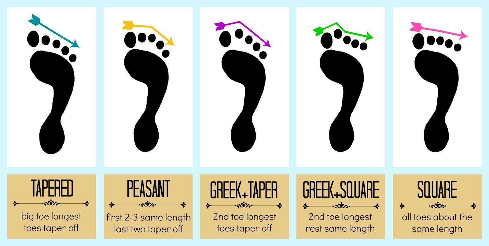
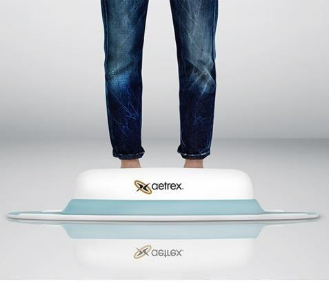

Home / Categoria
Conosci il tuo piede
Approfondimenti, schede e guide pratiche: 11 voci collegate alla categoria.

IL NOSTRO PIEDE Il nostro piede è composto da ben 26 ossa e che è formato da due archi ortogonali nel piede (l’arco longitudinale e l’arco trasverso). Le caviglie agiscono tramite l'interazione del piede con la parte inferiore...
ARCO BASSO/PIEDI PIATTI Caratteristiche: Piede molto flessibile con arco plantare basso. Poca definizione dell'arco. Potenziali problemi: iperpronazione, fascite plantare, tendinite post -tibiale, sperone calcaneare, problemi al...
ARCO MEDIO Caratteristiche: Piede biomeccanicamente efficiente. Piede moderatamente flessibile. Arco definito. Problemi potenziali: suscettibile a problemi comuni del piede come dolore al tallone e metatarsalgia da stress...
ARCO ALTO Caratteristiche: Piede molto rigido con un arco più sollevato da terra. E’un arco ben definito, che impone un eccessiva pressione sul retropiede e sull'avampiede. Potenziali problemi: fascite plantare, sindrome del...

VUOI CONOSCERE IL TUO TIPO DI ARCO? Per conoscere al meglio la forma, le dimensioni, le pressioni ed i movimenti dei piedi, ti consigliamo di eseguire la scansione 3d dei piedi almeno una volta all'anno. La scansione 3d del piede...
I tipi di piede sono principalmente tre, il greco, l’egizio ed il romano, ognuno di questi piedi si contraddistinguono per delle caratteristiche uniche. Il piede egizio ha le dita in scala decrescente, il piede greco ha una forma...
I tipi di piede: egizio, greco e romano Piede Greco. Questa forma ha solitamente il secondo e terzo dito leggermente più lunghi rispetto all’alluce. In generale il piede appare più slanciato ed affusolato, è il piede di elezione...
La caviglia e il piede. La caviglia è l’insieme delle articolazioni del piede che permettono al piede di eseguire tre differenti movimenti, ognuno su un diverso asse: L’asse trasversale attraversa i malleoli e si identifica con...

I movimenti di flesso/estensione del piede. La posizione corretta per valutare il grado di flessione ed estensione del piede è quella in cui il piano della pianta del piede è perpendicolare alla gamba il soggetto è in fase eretta...
Visione posteriore del piede destro, con tre differenti atteggiamenti Posizionamento delle ginocchia vare o